Two primary bulkheads.
A fitted, editable structure.
Conformal pocketed forgings, corrected member contacts, and separate nTop part models for all twelve fuselage stations.
The review identified missing shoulder pockets, a hooked pocket corner, and mismatched structural contacts. This revision corrects those features and details the aft bulkhead.
Design result
Both primary bulkheads now have 28 conformal pockets on each face.
The main assembly contains 54 separate native implicit members. Each fuselage station has its own editable notebook and custom-block output. The new views render native implicit bodies directly.
Loads, joint fasteners, forging supply limits, and production tolerances remain open. These deliverables support geometry and manufacturing review.
The first assumed-load study does not support uniform bulkhead thinning. It includes thin rib-section candidates and a comparison of longeron sections. Open the buckling and thin-section report.
01The structure inside the aircraft
The supplied aircraft measures approximately 9.544 m in length and 9.144 m in span in the retained source mesh. Gross weight is the user’s approximately 7,500 lb assumption.
The proposed structure uses two carry-through bulkheads, ten intermediate frames, eight longerons, and two spars per wing. Each canted tail contains two spars and five ribs.
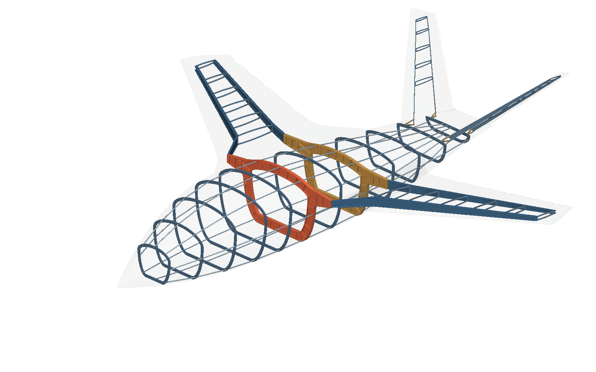
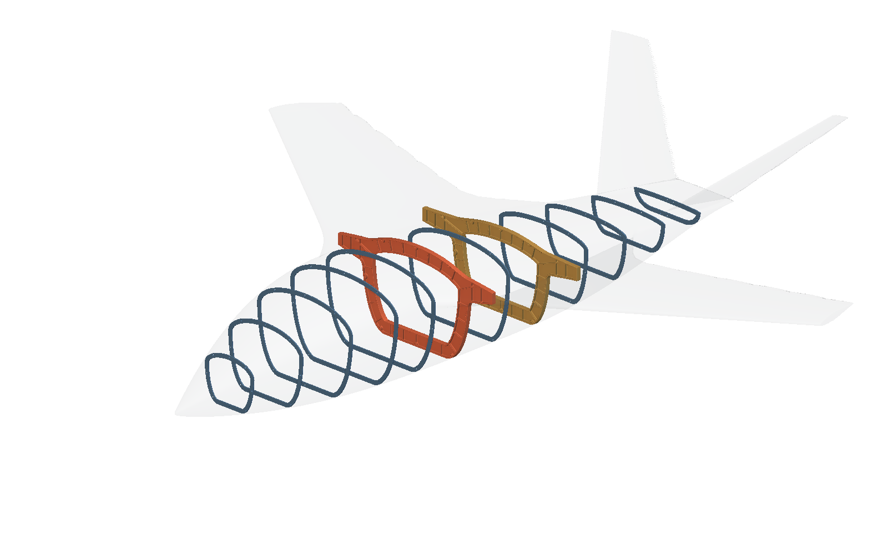
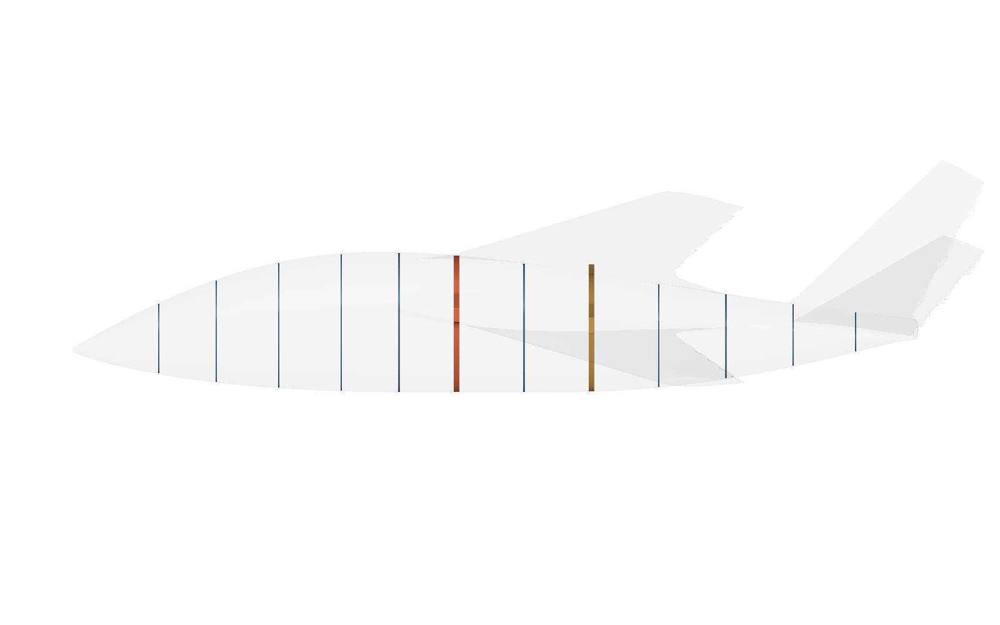
The continuous rings route the proposed wing load paths around the fuselage opening. Pocket webs connect their inner and outer flanges. Skin and joint definitions must complete the structural load paths.
02Shoulder pockets and corrected corners
The old construction extended some rib cutters across the full ring. Those cutters nicked remote pocket boundaries and produced the hooked corner.
Each cutter now acts only on its local crossing of the ring. The revised construction also retains two small, rounded shoulder pockets per face.
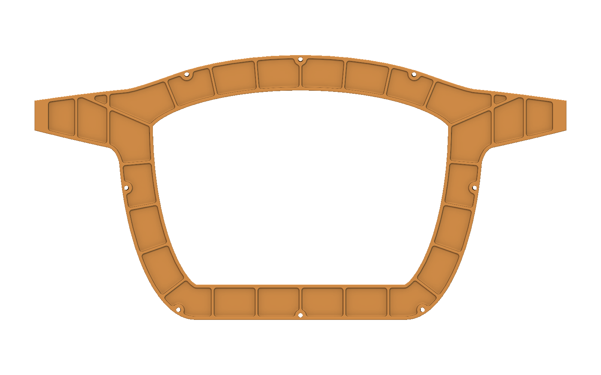
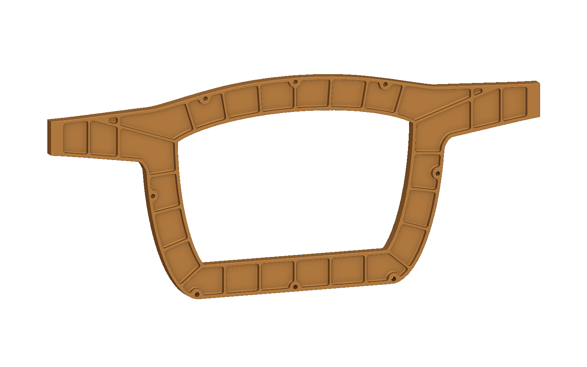
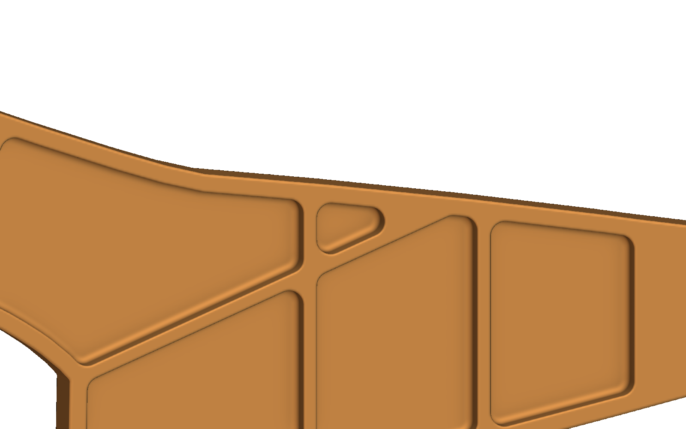
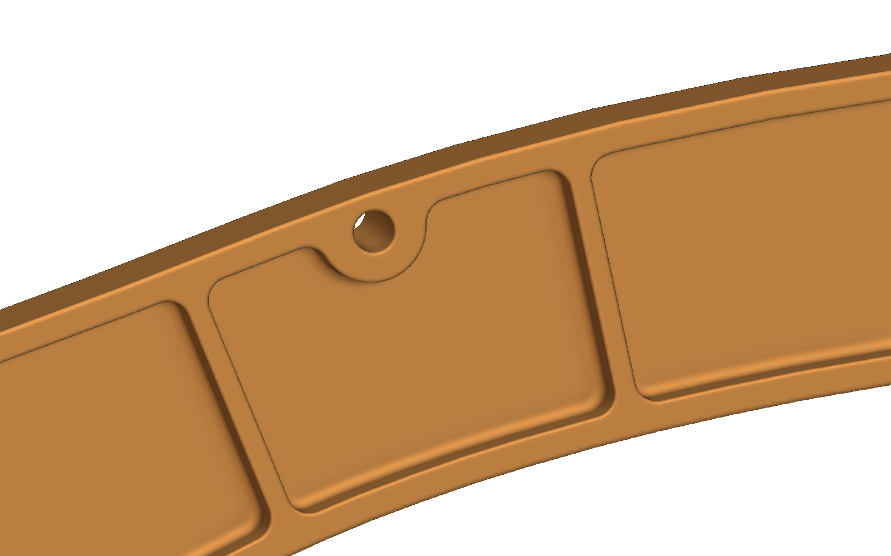
| Measured or proposed feature | Forward | Aft |
|---|---|---|
| Finished axial thickness, proposed | 60 mm | 60 mm |
| Residual web, proposed | 6 mm | 6 mm |
| Pocket depth per face, derived | 27 mm | 27 mm |
| Pocket count per face, measured | 28 | 28 |
| Small shoulder pockets per face, measured | 2 | 2 |
| Minimum rib gap, measured | 12.00 mm | 12.00 mm |
| Minimum outer contour land, measured | 15.81 mm | 15.84 mm |
| Minimum opening land, measured | 15.80 mm | 15.70 mm |
| Plan corner radius, proposed | 12.7 mm | 12.7 mm |
| Wall-to-floor radius, proposed | 6.35 mm | 6.35 mm |
| Perimeter edge break, proposed | 0.75 mm at 45° | 0.75 mm at 45° |
The forward geometry mass is 45.9% below the original 102.63 kg sector design. This comparison includes the revised end faces and passage bosses. It is not a strength comparison.
Review marks and original pattern
The source reference image is omitted from this public edition. The recorded design discussion is retained.
The source reference image is omitted from this public edition. The recorded design discussion is retained.
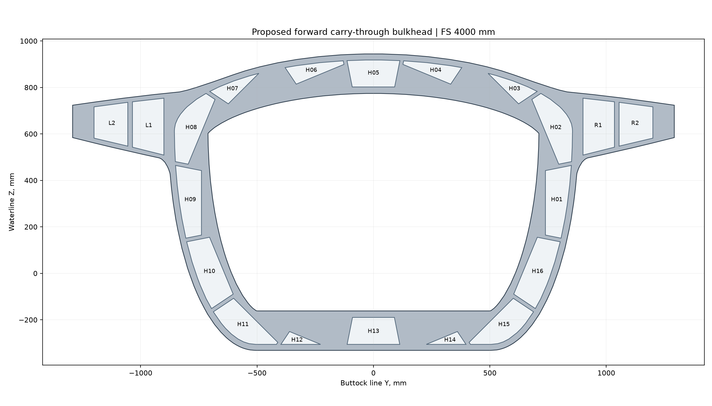
03How the members fit
The primary bulkhead end faces and wing spar roots share the planes Y = ±1,280 mm. Spar caps use a proposed 58.5 mm chord width to fit inside the bulkhead edge breaks.
Each wing rib ends at the actual inside spar web faces. The contact follows both segments where a rib straddles a spar change in direction.
The ribs retain end lands after trimming. Separate cap relief provides a proposed 0.5 mm allowance without opening a gap at the web contact.
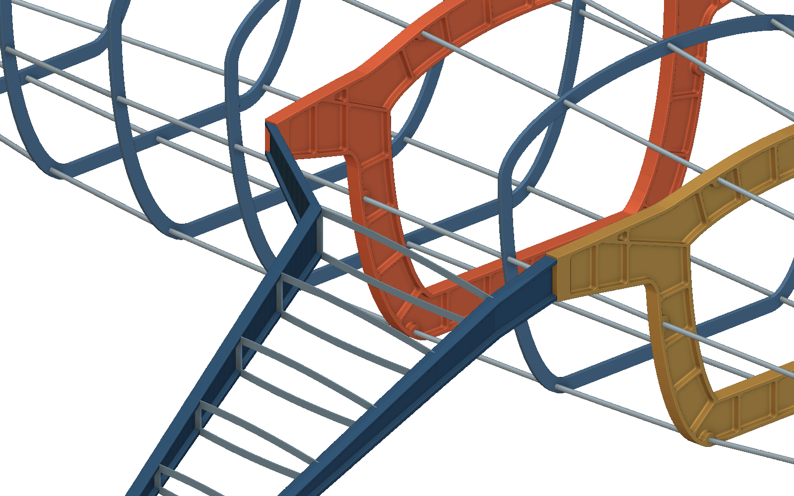
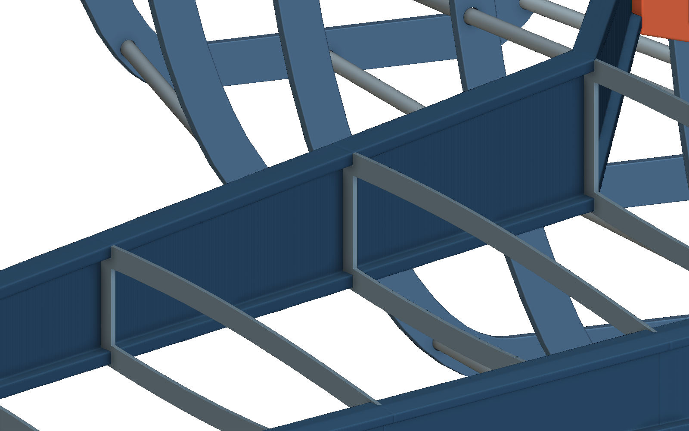
The tail checks exposed inconsistent contact at the old spar ends. Continuous webs now extend past the outer rib faces. The tail ribs use those same web planes.
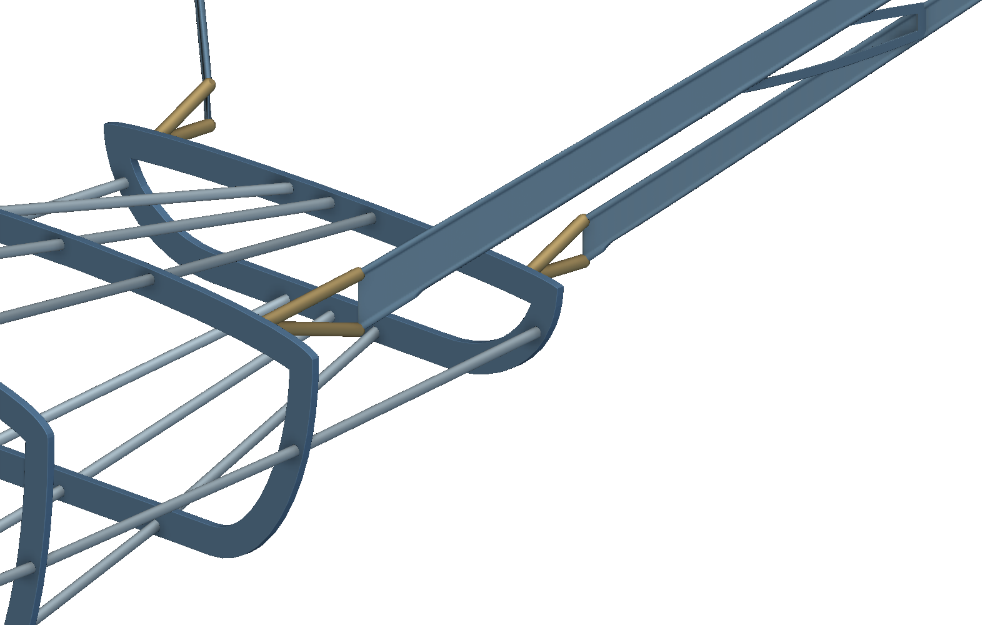
| Interface | Implemented geometry | Verification scope |
|---|---|---|
| Primary bulkhead to wing spar | Shared nominal butt plane; no automatic union between part outputs | Native contact, material, and void samples on both sides |
| Wing rib to spar | Matched web faces and 0.5 mm cap relief | Both sides of all twelve ribs |
| Tail rib to spar | Matched web planes and cap clearance | Both sides of all ten ribs |
| Tail support to frame | Mating plane follows the frame thickness input | Nominal 16 mm and changed 20 mm frames |
| Longeron to frame | Eight oblique passages at each station | 96 analytic clearance checks; minimum 0.279 mm at the largest permitted frame thickness |
| Primary bulkhead to aircraft | Minimum sampled reserves: 8.057 and 8.293 mm | 12,000 samples per part against the retained source mesh |
The passage construction adds a 0.5 mm allowance around its centerline envelope. Oblique circular sections reduce the actual minimum clearance shown above. The current longerons are solid round placeholders.
These checks establish the listed geometric contacts and clearances. Fasteners, splice fittings, bearing areas, skin attachments, and joint strength remain undefined.
04How the STEP files were made
The STEP files are independent Open CASCADE boundary-representation models. They are not direct exports of the nTop implicit bodies.
- Read the same outer profile, central opening, and pocket-core coordinates used by the native nTop model.
- Extrude the blank and central opening. Add the perimeter edge breaks.
- Offset each planar core to form the R12.7 pocket boundary. Extrude a cutter for each face.
- Apply R6.35 wall-to-floor fillets to the cutter, then subtract it from the blank.
- Cut the eight oblique longeron passages.
- Write STEP, re-import it, and check that it contains one valid solid.
- Compare an independent tessellation with the exact native construction formula and check the native field separately.
| Result | Forward STEP | Aft STEP |
|---|---|---|
| Re-imported topology | One valid solid | One valid solid |
| Closed mesh components | One | One |
| Tessellation triangles | 629,370 | 609,532 |
| Formula comparison samples | 60,000 | 60,000 |
| Maximum sampled residual | 0.00847 mm | 0.00848 mm |
| RMS sampled residual | 0.00203 mm | 0.00209 mm |
The comparison samples both faces, pocket walls, blends, and passages. Finite sampling does not provide a global surface tolerance or a CAM acceptance certificate.
The editable script is export_modular_bulkheads.py. The shared profiles are retained in forward geometry and aft geometry.
05Separate part models and assembly controls
Each station notebook outputs one native implicit body in aircraft coordinates. The main model imports that saved definition as a custom block. No second placement transform is applied.
The main tree has 65 variables. Its 109 unique imported definitions include the original aircraft functions and the structural parts.
| Control | Default | Applied assembly range | Effect |
|---|---|---|---|
| Frame thickness | 16 mm | 12-20 mm | All ten frames and their tail support mating faces |
| Forward bulkhead thickness | 60 mm | 60-64 mm | Forward axial faces and pockets |
| Aft bulkhead thickness | 60 mm | 60-64 mm | Aft axial faces and pockets |
| Primary residual web | 6 mm | 6-8 mm | Pocket floors in both primary bulkheads |
The main model evaluates one shared aircraft interior and passes it to the wing, longeron, tail, and support parts. Each standalone part has the same source as its default input.
The source reference image is omitted from this public edition. The recorded design discussion is retained.
Custom definitions are embedded snapshots. An edit to a separate notebook does not silently change an assembly that already imported it.
- Edit and verify the separate part notebook.
- Export its complete extended recipe, including inputs, output, and dependencies.
- Reimport or rebuild the assembly from that saved definition. Preserve the input order and units.
- Repeat the contact checks and save the assembly. Regenerate STEP when primary geometry changes.
| Station | X coordinate | Role | Editable notebook |
|---|---|---|---|
| F01 | 900 mm | Fuselage frame | F01-frame.ntop |
| F02 | 1,500 mm | Fuselage frame | F02-frame.ntop |
| F03 | 2,150 mm | Fuselage frame | F03-frame.ntop |
| F04 | 2,800 mm | Fuselage frame | F04-frame.ntop |
| F05 | 3,400 mm | Fuselage frame | F05-frame.ntop |
| F06 | 4,000 mm | Detailed primary | Forward-primary-bulkhead.ntop |
| F07 | 4,700 mm | Fuselage frame | F07-frame.ntop |
| F08 | 5,400 mm | Detailed primary | Aft-primary-bulkhead.ntop |
| F09 | 6,100 mm | Fuselage frame | F09-frame.ntop |
| F10 | 6,800 mm | Fuselage frame | F10-frame.ntop |
| F11 | 7,500 mm | Fuselage frame | F11-frame.ntop |
| F12 | 8,150 mm | Fuselage frame | F12-frame.ntop |
Native views of all twelve separate models
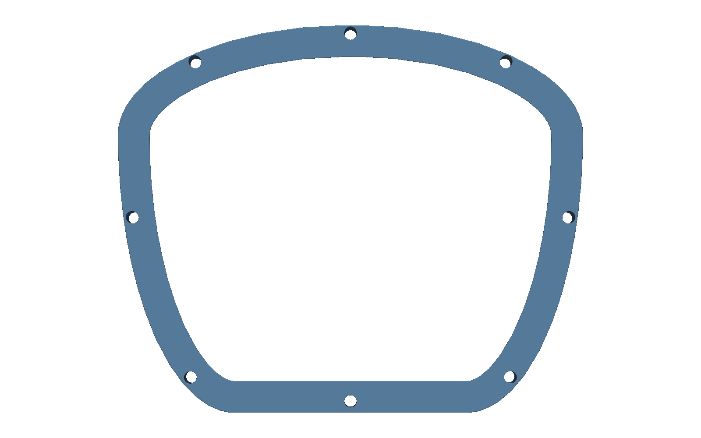
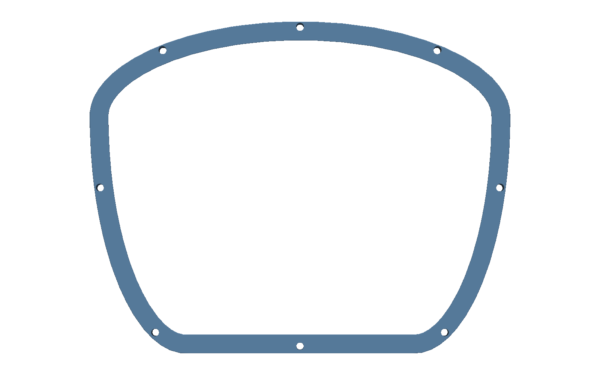
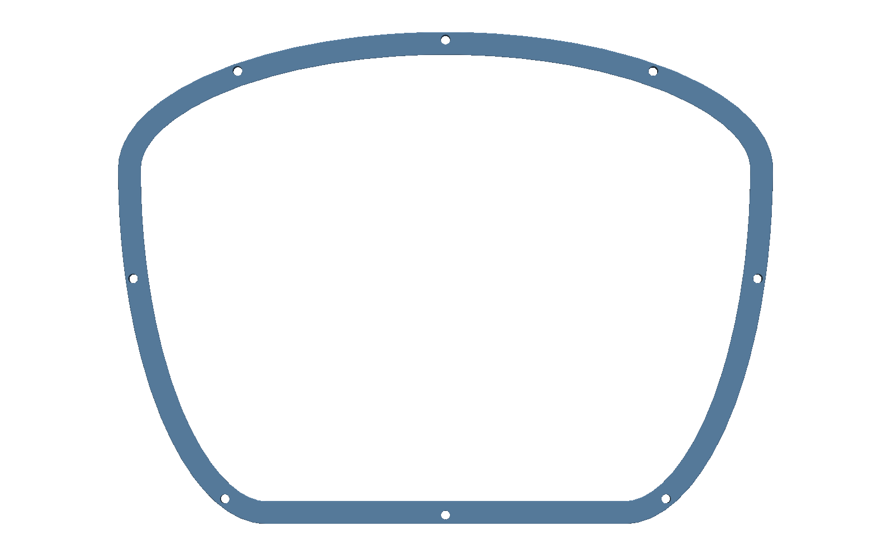
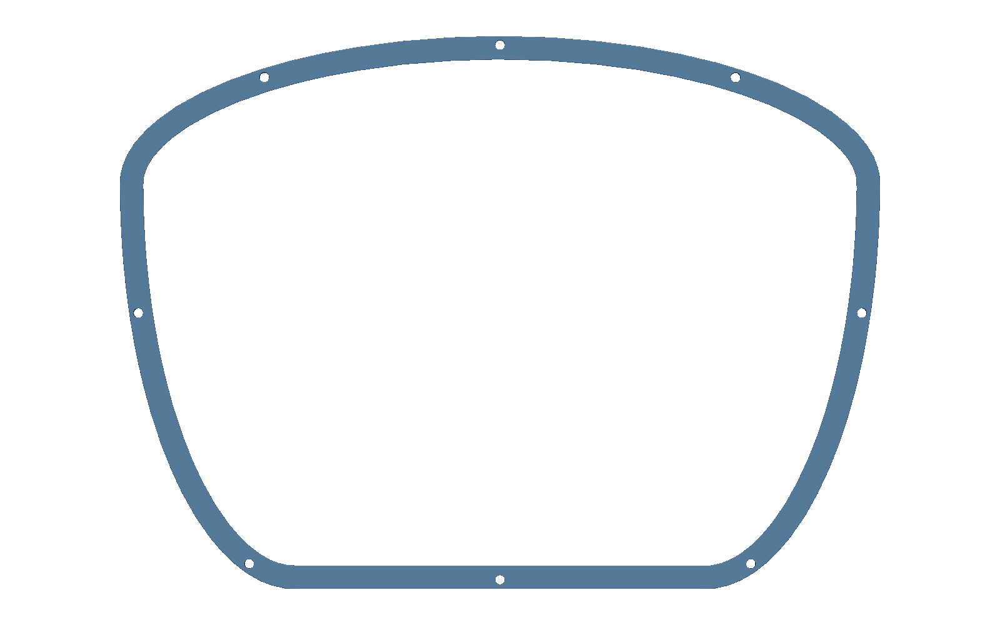
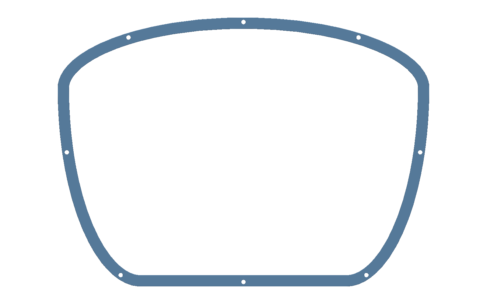
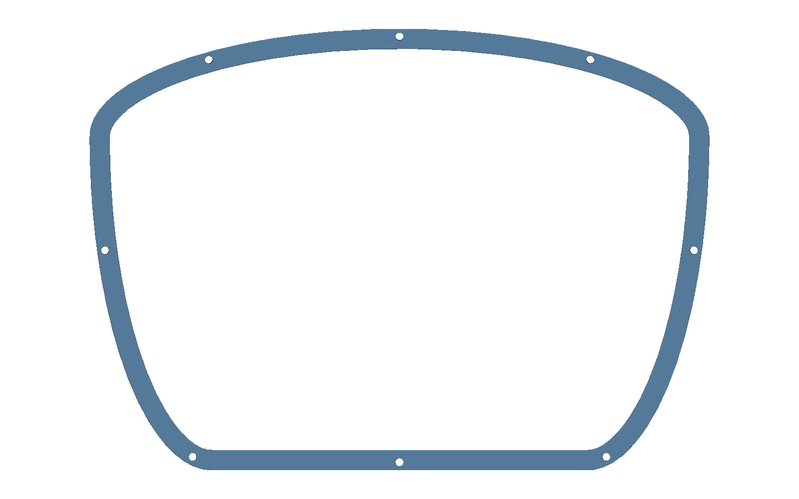
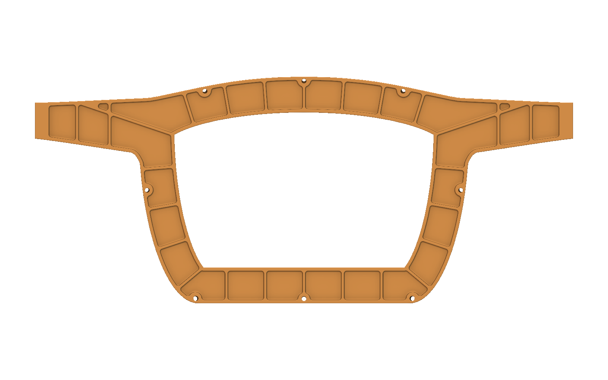
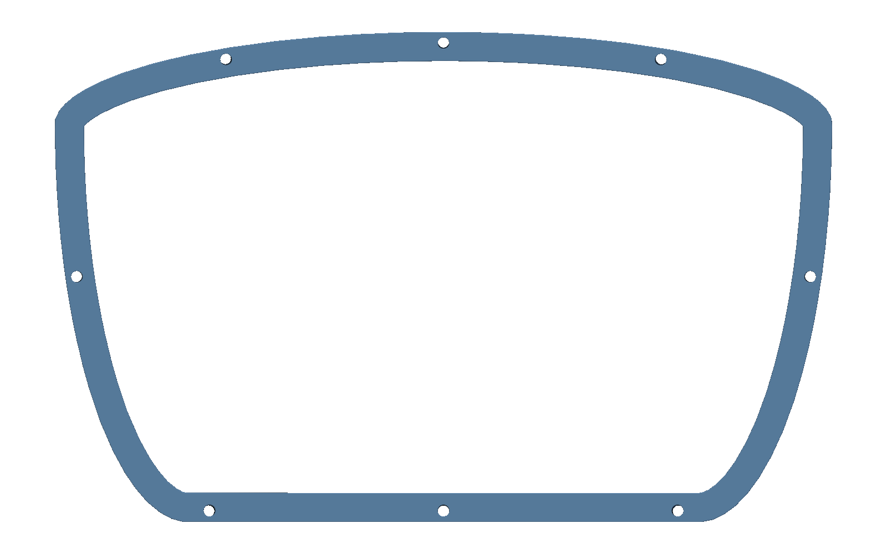
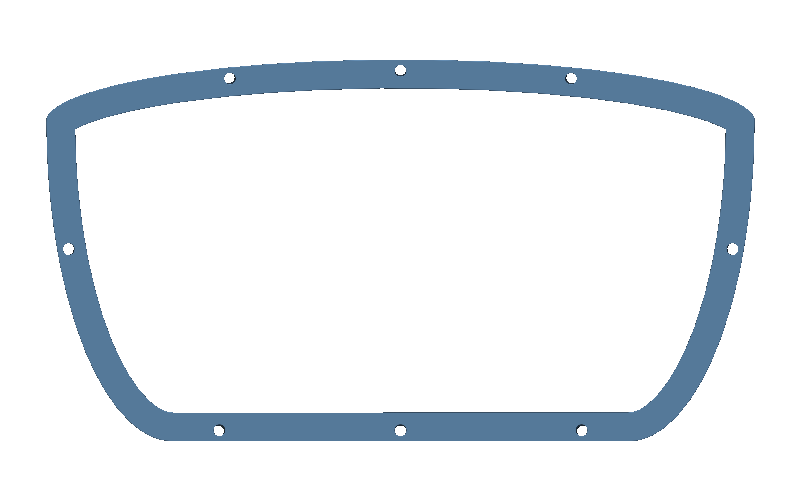
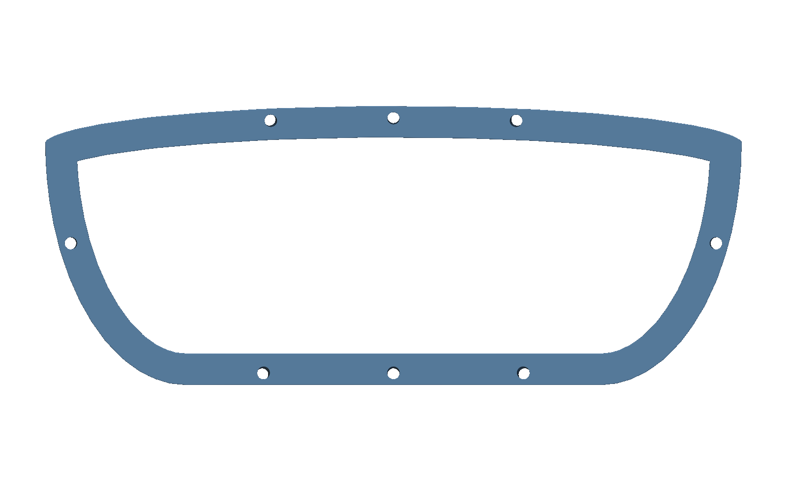
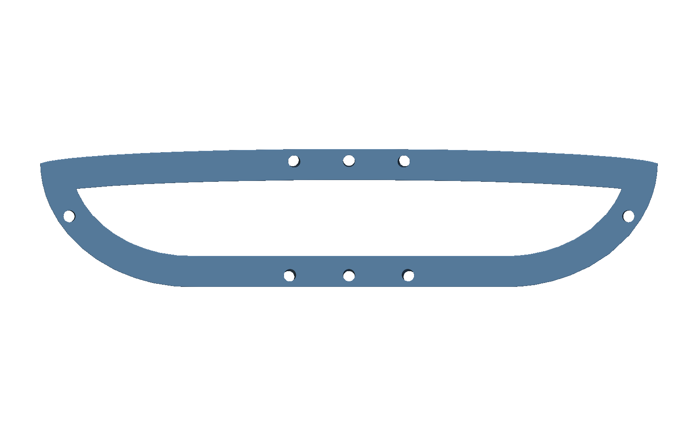
The revision manifest records source hashes, saved custom identities, contracts, and the update rule. The construction and verification scripts remain in the project.
06Verification and its limits
| Check | Result | What it establishes |
|---|---|---|
| Custom-block pilot | 80 checks pass at two sizes | Build 42926 supports dimensioned part inputs and repeated custom instances |
| Primary and frame checks | 1,952 native samples pass | Two thickness cases; primary web, pocket voids, rolling roots, passages, and axial faces |
| Mating checks | 1,072 native samples pass | Listed wing, tail, primary root, and support contacts |
| STEP topology | Both re-imported bodies are valid single solids | Closed boundary representation |
| STEP comparison | 120,000 retained samples across both parts | Agreement with the shared mathematical field construction |
| Source containment | 24,000 retained samples; none outside | Sampled fit of both primary bodies inside the source aircraft |
| Presentation | Native implicit renders and collapsed editable notebooks | The delivered geometry renders in nTop |
| Loads and manufacturing release | Open | No strength rating, approved fastener design, production drawing, or CAM simulation supplied |
The source sections came from a native mesh at 4 mm tolerance. The eight-millimetre envelope reserve is proposed. Exact skin surfaces and assembly tolerances require further definition.
The first tail contact test failed and is retained. The current test uses the corrected spar construction. Command receipts retain failed runs and completed revisions.
Geometry mass uses 2,830 kg/m³, the supplier’s typical 7050 density. Mass is calculated from the closed STEP tessellation. It does not establish the required structural weight.
Evidence: primary root checks, tail contact checks, support checks, passage analysis.
07Material and manufacturing proposal
7050-T7452 remains the candidate forged alloy. Aubert & Duval describes compression stress relief and the T74 balance of strength, toughness, fatigue, and corrosion resistance. Supplier typical values are not design allowables.
Primary material source: Aubert & Duval 7050 data sheet.
| Operation | Proposed approach | Still required |
|---|---|---|
| Forging | Near-net blank with grain flow suited to the ring and wing arms | Supplier review, material specification, inspection and directional allowables |
| Rough machining | Alternate pocket removal between faces and support the thin web | Fixture design and residual stress assessment |
| Pocket finish | Axial access from both faces; R12.7 plan corners and R6.35 roots | Actual cutters, reach, holder clearance, cutting strategy and CAM simulation |
| Longeron passages | Machine the modeled oblique axes | Bore finish, datum control and final assembly tolerance |
| Joint details | Retain the solid root lands for the future attachment design | Load transfer, fasteners, fits, edge distances and fatigue assessment |
| Inspection | Measure free-state contour, web thickness, lands and blends | Production drawing, GD&T and acceptance limits |
The bulkheads have machining-oriented geometry. Manufacturing release still requires defined loads, structural analysis, interfaces, supplier acceptance, tolerances, and validated machining instructions.
08Reference layout and process record
The user references show continuous flanges, broad machined pockets, and local cross ribs. They informed the geometry pattern. Their unknown dimensions and loads do not size this aircraft.
The source reference image is omitted from this public edition. The recorded design discussion is retained.
The source reference image is omitted from this public edition. The recorded design discussion is retained.
Public machine-tool examples show pocket walls, thin ribs, and two-face machining of aircraft frames. The layout uses these manufacturing features as reference forms.
Primary process source: Vision Wide aircraft frame and rib machining examples. General construction context: FAA Pilot’s Handbook of Aeronautical Knowledge.
| Stage | Work and retained record |
|---|---|
| Source | Preserved the original notebook and copied its dependencies. Measured native fuselage, wing, and tail sections. |
| Small pilot | Applied the Ski-A170 sphere-envelope workflow. Verified the rolling-ball field before the full part. |
| Pattern review | Replaced the first sector pattern with contour pockets. Retained the rejected pattern and material comparison. |
| Corner and shoulder revision | Limited rib cuts to their local ring crossing. Added rounded shoulder pockets and re-exported both primary solids. |
| Assembly revision | Separated twelve station models. Created saved custom definitions, shared inputs, fitted wing and tail contacts, and longeron passages. |
| Verification | Checked two control values, native fields, independent STEP topology, surface samples, and native rendered views. |
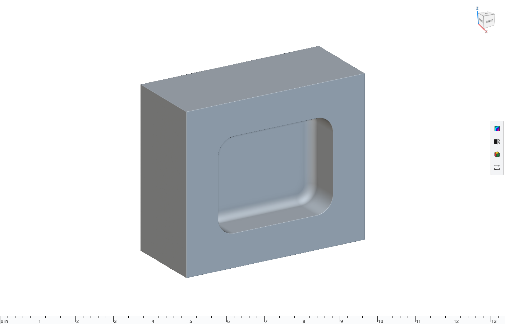
The prototype Notebook API supplies block schemas, native inspection, notebook opening, and saved checkpoints. Complete extended recipes and the native CLI build the custom definitions.
The final tail revision used a qualified update of saved native definitions. A native readback then confirmed the main expression and all 54 part outputs.
The original source notebook remains unchanged. The earlier accepted delivery is retained under revisions/before_modular_20260914. The new model uses nTop build 42926.
Proposed dimensions, measured results, public material data, and unresolved release inputs are labeled separately throughout this report.
09Rib thickness and longeron study
The current longerons are solid round layout placeholders. Thin-wall hat or other sections need new frame and skin attachment details.
The new analysis uses the 7,500 lb weight assumption, an editable 3.8 g maneuver case, local plate buckling, and member stability checks.
Uniform thinning of the primary bulkheads fails this initial screen. Editable straight-section coupons show 2 mm wing and 1.5 mm tail candidates for further development.
Read the calculations, assumptions, candidate sections and verification. The aircraft model and primary STEP files remain Revision D.